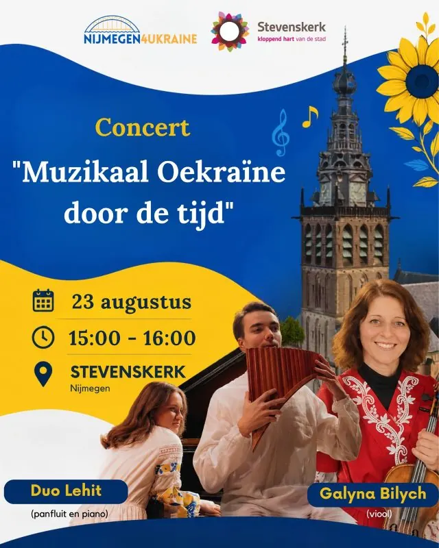
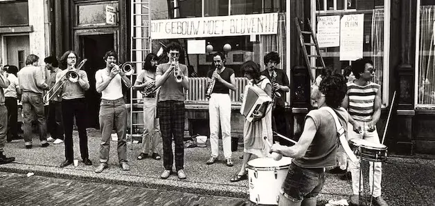
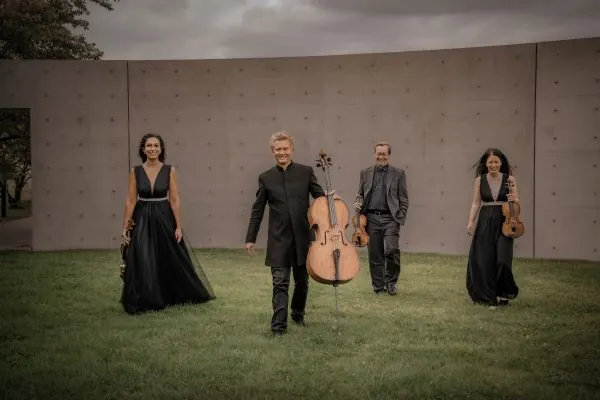
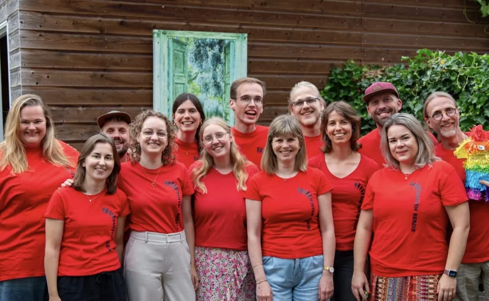

Dit evenement is afgelopen. Bekijk wat er binnenkort te doen is.
Muziek
Concert “Muzikaal Oekraïne door de tijd heen”
- Wanneerzondag 23 augustus 2026, 15.00 tot 16.00 uur
- WaarStevenskerk Nijmegen
Sint Stevenskerkhof 62, 6511 VZ Nijmegen Route - ToegangGratis

Ter gelegenheid van de Onafhankelijkheidsdag van Oekraïne in Nijmegen hebben Nijmegen4Ukraine en Stevenskerk een speciaal concert gepland: “Muzikaal Oekraïne door de tijd heen” in de Stevenskerk op 23 augustus vanaf 15.00 tot 16.00 uur.
Duo Lehit, een panfluit-piano-ensemble opgericht door Taras Berchtold en Anastasiia Bohodysta, samen met Galyna Bilych, violiste van het Nationaal Symfonieorkest van Oekraïne, zal diverse muziekstukken van Oekraïense componisten en volksliederen ten gehore brengen.
Duo Lehit creëert een unieke klankwereld waarin de lyrische stem van de panfluit de rijke klanken van de piano ontmoet. Sinds 2022 treden ze samen op in diverse zalen in Nederland en Zwitserland.
Galyna Bilych werd al tijdens haar studie aan de Nationale Music Academie van Oekraine in Kyiv in 1997 violiste in het Nationaal Silfonisch Orkest van Oekraine. Een loopbaan en leven dat op slag veranderde door de brute aanval op haar thuisland. Sinsdien verblijft zij met haar kindeten in Nederland en is als violiste in kamermuziek – ensembles en orkesten actief.
Dit speciale concert is gratis en we zamelen donaties in voor de Stichting Netherlands4Ukraine. Voor en na het concert kunt u ook handgemaakte Oekraïense souvenirs kopen en meedoen aan het maken van camouflagenetten voor Oekraïense verdedigers. Korte inleidende speeches van Oekraïense en Nederlandse organisaties zullen dit feestelijke concert openen.
Meer evenementen bij Stevenskerk Nijmegen
Binnenkort in Nijmegen

Krachtige collectieven3 nov, 19.30 uurThiemeloods Nijmegen 5nov“We the People” – 250 USA in koormuziek5 nov, 20.15 uurTitus Brandsma Gedachteniskerk Nijmegen 6nov
“Spurensuche” – Kamerconcert met strijkkwartet6 nov, 20.00 uurKleve 6nov
Theatervoorstelling Buiten Bereik6 nov, 20.00 uurTheater het Badhuis Nijmegen